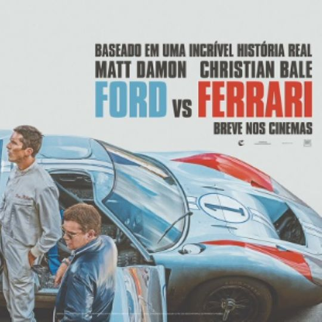
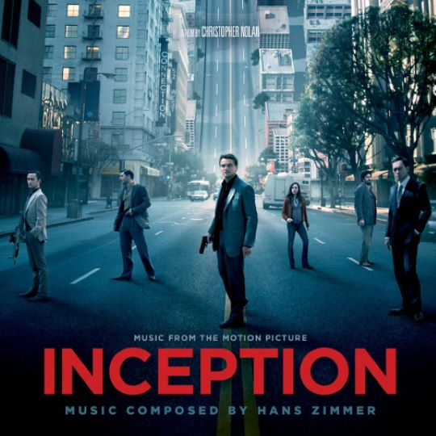
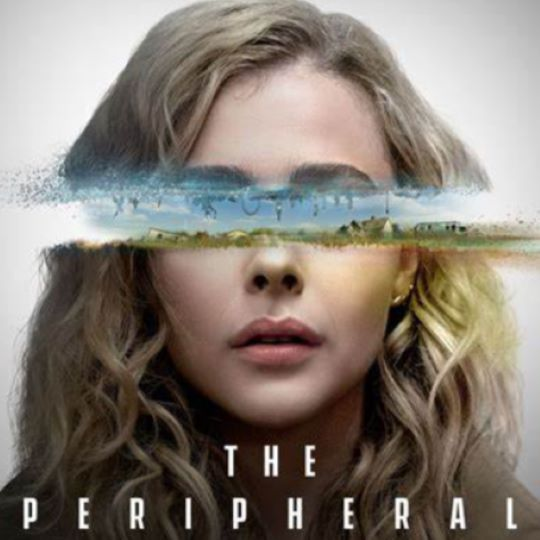
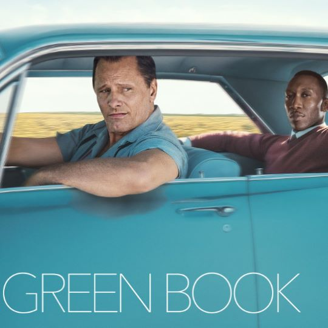
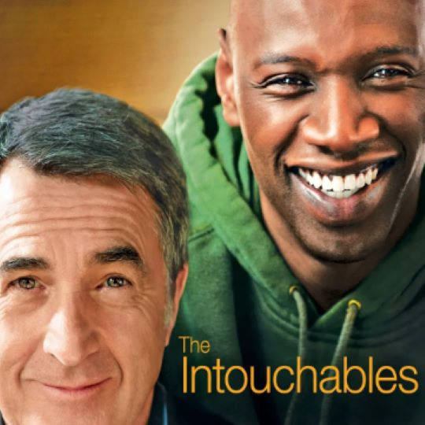
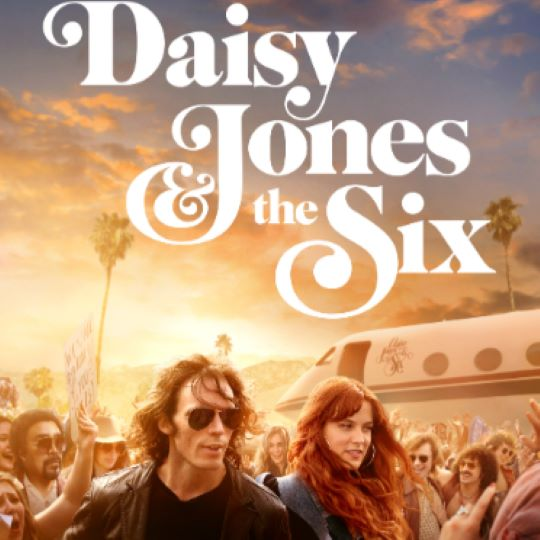

Action
トム・クルーズ主演｜アクション｜2022年 「空を駆ける、命を賭けた選択。」
flight_takeoffWelcome to my movie recommendation page! Here, I’ve picked some of my favorite films across four genres: Action, Science Fiction, Human Drama, and Musical. Hope you find something you'll enjoy watching next!
トム・クルーズ主演｜アクション｜2022年 「空を駆ける、命を賭けた選択。」
flight_takeoffトム・ハンクス主演｜戦争・ドラマ｜1998年 「命を救うために、命を懸ける。」
swordsマット・デイモン主演｜伝記・スポーツ・ドラマ｜2019年 「情熱で走れ。勝利はその先にある。」
sports_score レオナルド・ディカプリオ主演｜SF・アクション｜2010年 「夢の奥へ、真実を盗め。」
Schedule クロエ・グレース・モレッツ主演｜SF・サスペンス｜2022年 「未来を見た時、何を信じるか。」
Smart_Toy リーアム・ニーソン主演｜歴史・ドラマ｜1993年 「一人を救えば、世界が変わる。」
Volunteer_Activism
ヴィゴ・モーテンセン主演｜ヒューマンドラマ｜2018年 「違いを越えて、心が重なる旅へ。」
Group フランソワ・クリュゼ主演｜ヒューマンドラマ・コメディ｜2011年 「支え合うことで、人生は輝き出す。」
Wheelchair_Pickup ライリー・キーオ主演｜音楽・ドラマ｜2023年 「音が生まれた場所に、愛と痛みがある。」
Volume_Up 